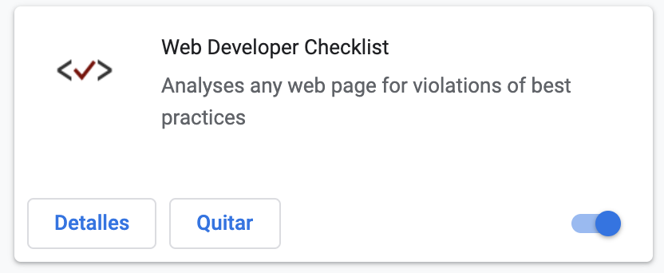

Ejercicio 1: Estructuras y contenido
- Crea la estructura de un documento HTML con título: “1ºDAW”. El objetivo de este sitio será presentar los ejercicios del módulo. Utiliza un diseño y una estructura personal para el sitio, pero no olvides utilizar criterios de usabilidad y accesibilidad.
- Este ejercicio se encuentra realizado e implementado mediante la realizació de este portal donde está navegando.
- Crea la estructura de un documento HTML con título: “Las recetas de la abuela”. El objetivo de este sitio será mostrar recetas de cocina.
- Accede al ejercicio
- Instala en tu navegador la extensión para desarrolladores y valida los documentos creados
- 
- Añade la etiqueta <abbr> al título 1ºDAW. ¿Para qué se utiliza?
- HTML y XHTML son las dos variantes que existen en el lenguaje HTML 5. Las diferencias entre esas dos variantes son básicamente sintácticas: la sintaxis HTML está inspirada en la norma SGML (aunque no la cumple estrictamente), mientras que la sintaxis XHTML está basada en la recomendación XML.
Básicamente, XHTML es más estricto que HTML y eso lo refleja en casos como este:
- En XHTML no puede haber texto no incluido en alguna etiqueta, pero en HTML puede haberlo.
- En XHTML, los nombres de elementos y atributos deben escribirse en minúsculas. En HTML no es necesario.
- En XHTML, las referencias a entidades en hexadecimal deben escribirse en minúsculas. En HTML se pueden escribir en minúsculas o mayúsculas.
- Para evitar problemas con los caracteres "<" y "&", en XHTML el código javascript (y de estilo) se suele incluir en secciones CDATA. En HTML no es necesario.
- Hemos completado la siguiente tabla:

Esta actividad ha sido realizada en un principio sobre esta misma página, al ir avanzando el temario e incluyendo nuevos elementos hemos ido convirtiéndola en algo más complejo.